PART 01 · THEORY
QKD Theory — BB84 Protocol
Quantum threats, basis selection, sifting, QBER, error correction and privacy amplification.
Watch on YouTube ↗A three-part DIY educational build using ESP32 boards, servo-driven polarization control, a polarizing beam splitter and OPT101 optical sensors.
This repository accompanies the YouTube video series, build notes, wiring diagram and calibration references.
Explore the ESP32-based transmitter and receiver, the free-space optical link, and their working on-device displays. These are photographs of the project hardware, not conceptual renderings. Click any image to view it in full.
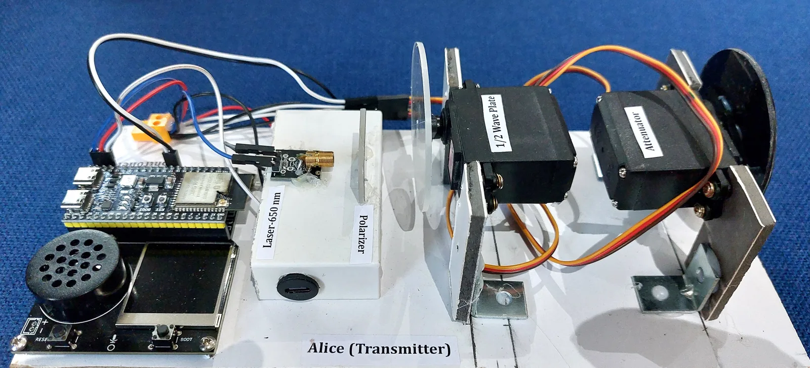
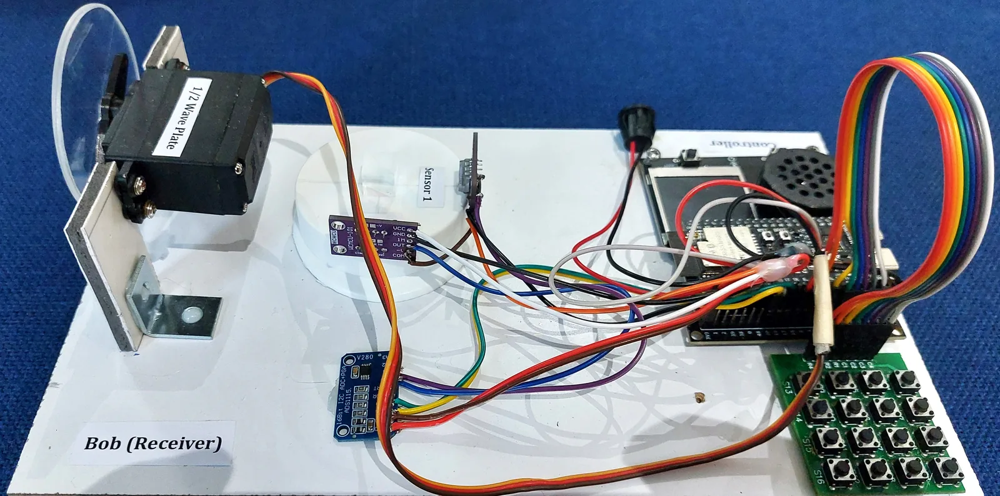
See how the BB84 ideas connect to the actual Alice and Bob hardware. The videos play directly here, beginning with the theory, followed by the electronics and the live demonstration.
Quantum threats, basis selection, sifting, QBER, error correction and privacy amplification.
Watch on YouTube ↗Alice, Bob and optional Eve architecture: optics, servos, sensors and embedded controllers.
Watch on YouTube ↗The physical free-space link, alignment, optical measurements, basis sifting and shared AES-256 demonstration key.
Watch on YouTube ↗Prefer watching in sequence? Open the complete YouTube playlist ↗
The visible laser beam travels between the independently powered transmitter and receiver assemblies.
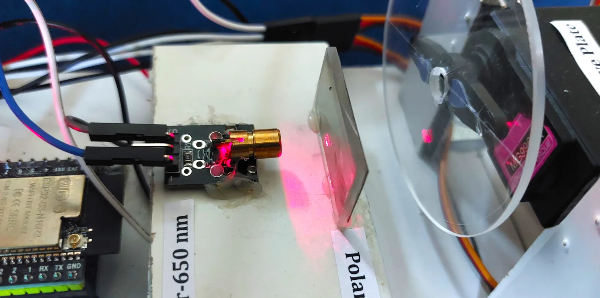
Bob’s on-device keypad menu provides measurement, alignment, link and diagnostic functions. The runtime screens show Alice’s selected transmission state and Bob’s classified optical readings.
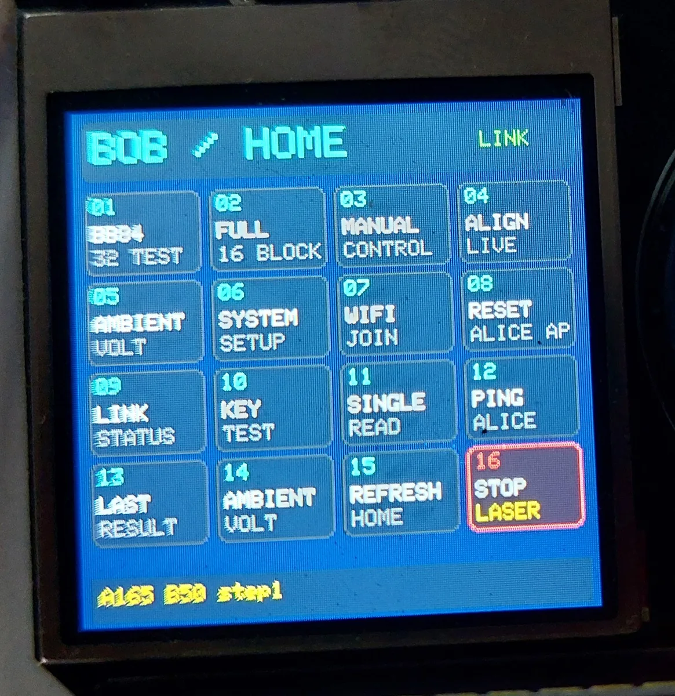
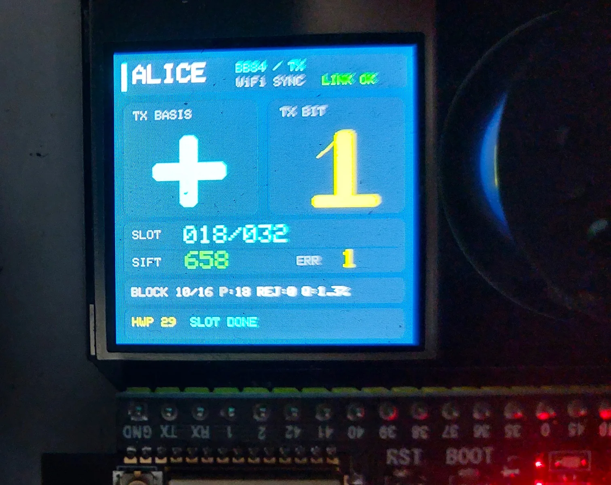
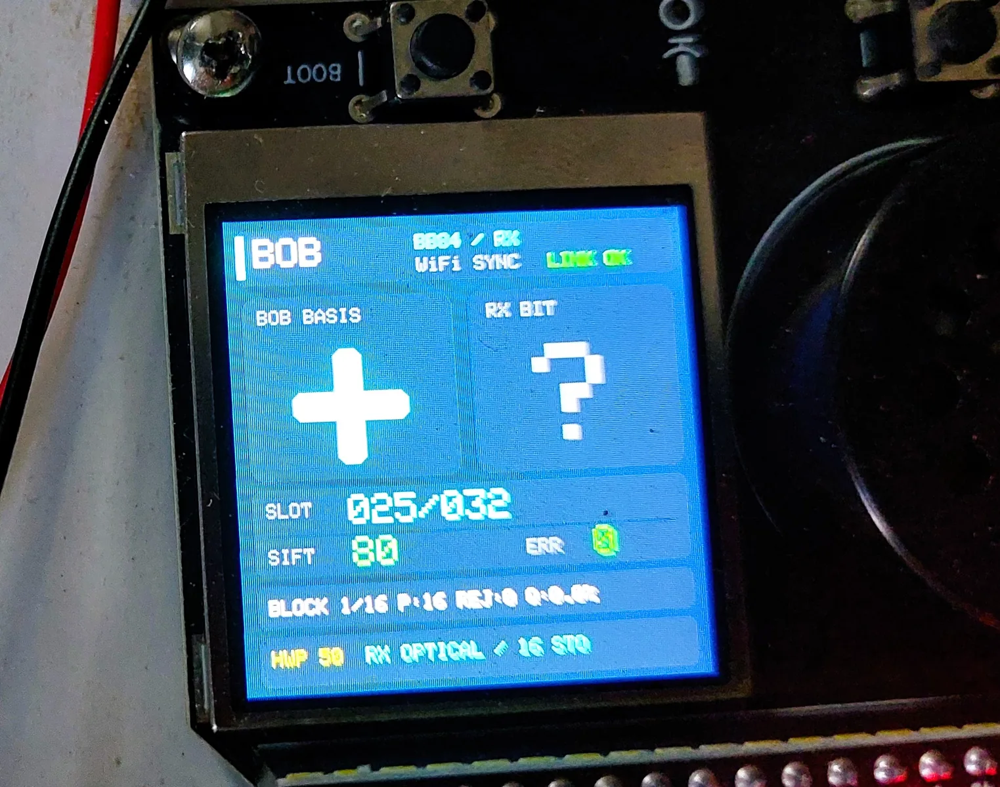
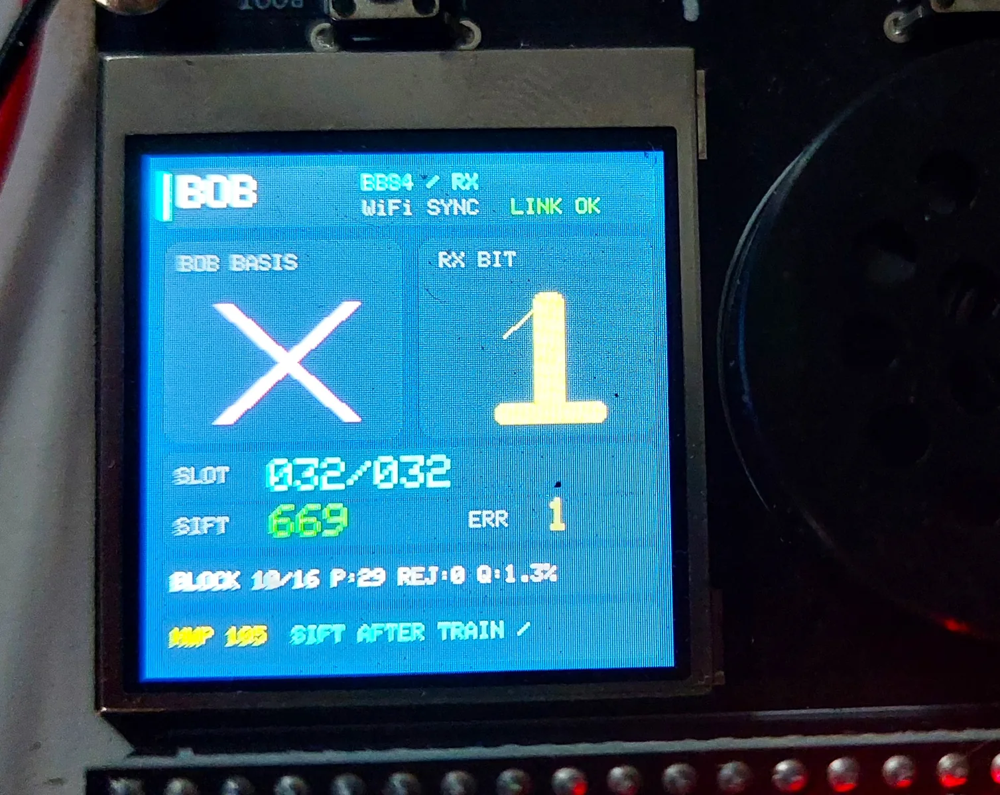
With a calibrated matching basis, Bob’s two photodiodes show a dominant output that can be classified as a bit. With different bases, the optical intensities become more evenly distributed and the diagnostic can label a reading as mixed.
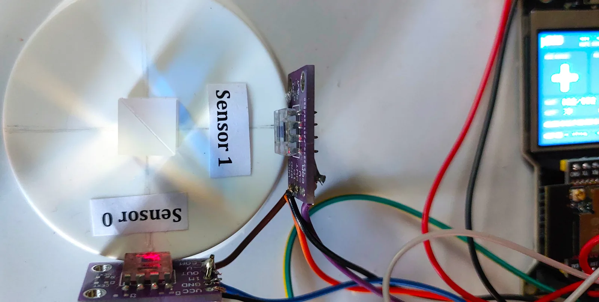
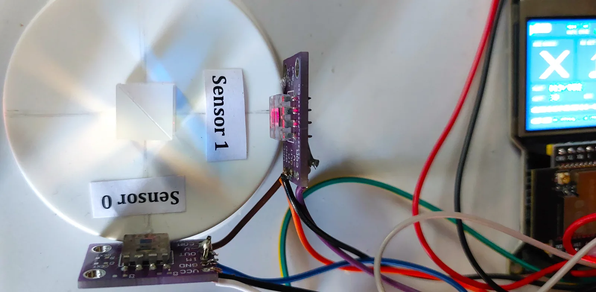
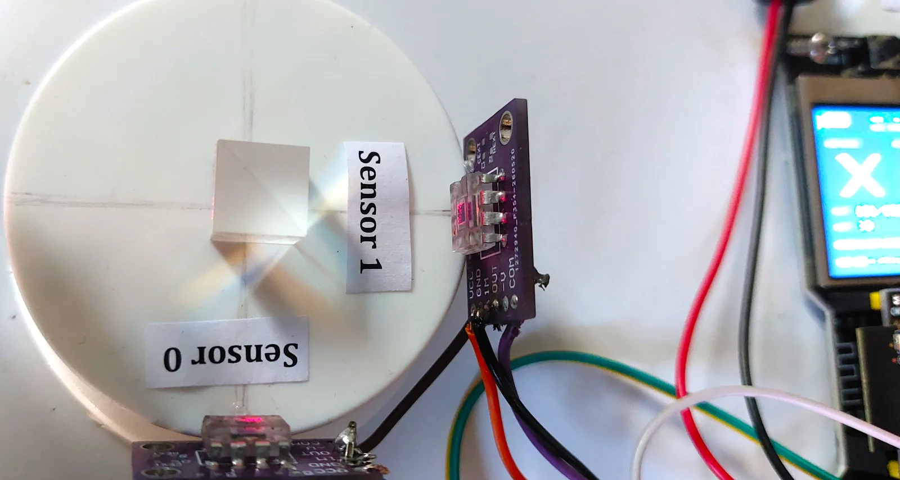
When Eve interception was simulated, Alice and Bob’s processing encountered errors and the firmware rejected affected blocks. This photograph captures the prototype during that test, showing the rejected-block counter on Alice’s screen.
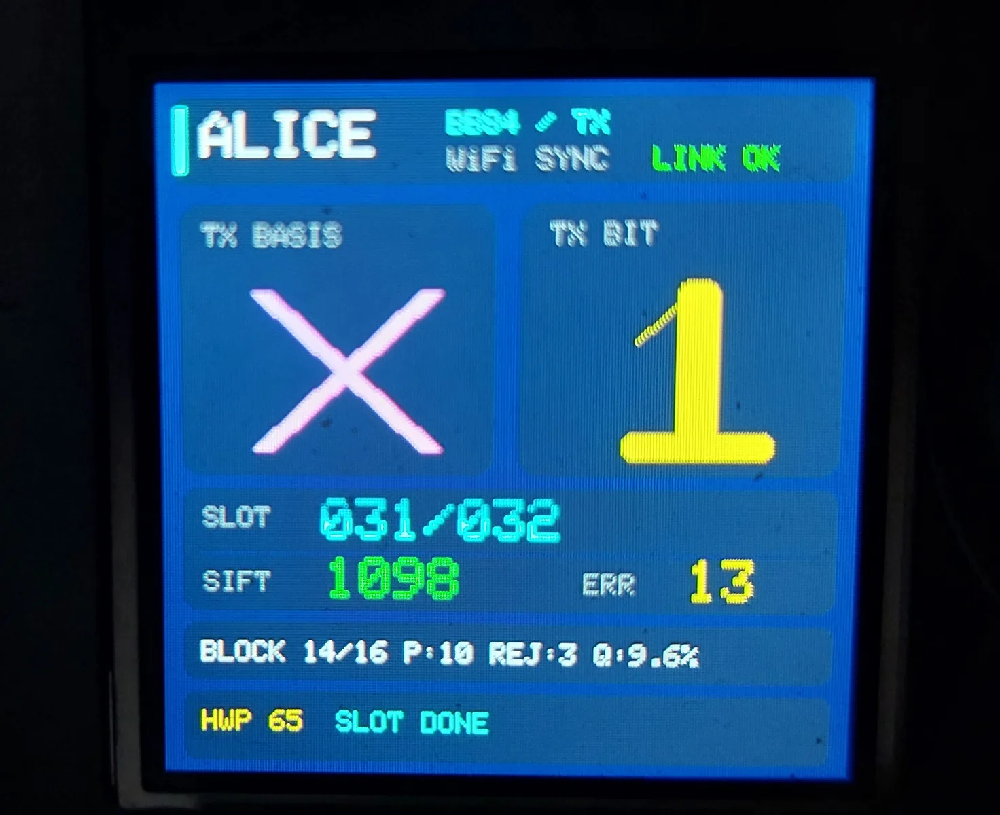
The rejection shown is the prototype’s programmed response to the simulated interception and elevated errors. The display also shows SIFT 1098 at this moment.
This demonstrates educational error detection and block-rejection logic using classical optical measurements. It does not independently verify a real-world eavesdropper or provide a quantum-security guarantee.
In a successful demonstration run, Alice displayed KEY AGREED and a shared 256-bit demo key. The screen recorded QBER 0.00% for this run, contrasting with the rejected-block result during the simulated Eve interception shown above.
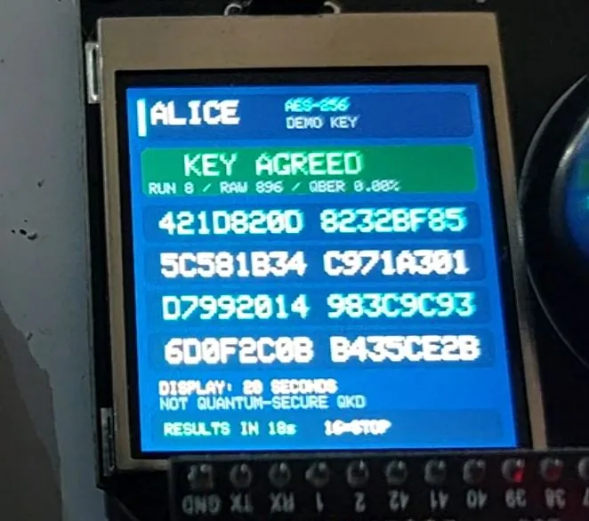
The firmware completed its educational basis comparison, error checking and key-processing flow and reported an agreed demo key. The screen displays the 64-character hexadecimal representation of the 256-bit value.
The device itself labels this a demo key and not quantum-secure QKD. A displayed agreement and zero error rate for one run do not establish cryptographic security.
Components required for the Alice–Bob demonstration and optional Eve interception setup, with quantities and sourcing references. Select a photograph to view it full-size.
Quantity: 2 (Alice + Bob) + 1 (Eve)
Quantity: 3 (Alice + Bob) + 3 (Eve)
Quantity: 1 (Bob) + 1 (Eve)
Quantity: 1 or 2
Quantity: 1 small piece
Quantity: As required
Quantity: As required
The quantities above reproduce the uploaded parts list; Eve components are for the optional interception demonstration, not an additional required unit for the basic two-device setup. Reference links are searches, not verified product listings. Photographs illustrate parts already documented in the project.
Educational disclaimer: This is a DIY educational simulation inspired by the BB84 protocol. It demonstrates basis selection, detector imbalance, sifting and experimental error-rate analysis using low-cost classical optical components. It is not a production-grade or security-validated QKD system.
A full QKD implementation normally requires true single-photon or properly calibrated weak-coherent sources, single-photon detectors (SPDs), careful side-channel analysis, authenticated classical communication and rigorous security proofs. This project instead focuses on learning the ideas with accessible hardware.
In the BB84 idea, Alice randomly chooses a basis and a bit, then encodes that bit into one of four optical states. Bob randomly chooses a basis to measure the incoming pulse. When Bob’s basis matches Alice’s basis, the measurement should agree more strongly with the transmitted state. When the bases do not match, the result should be ambiguous or randomly split.
| Alice basis | Bit | Conceptual state | What Bob should see |
|---|---|---|---|
| + | 0 | One polarization orientation | Strong dominance on one detector when Bob uses + |
| + | 1 | Orthogonal orientation | Strong dominance on the other detector when Bob uses + |
| × | 0 | Diagonal orientation | Strong dominance on one detector when Bob uses × |
| × | 1 | Other diagonal orientation | Strong dominance on the other detector when Bob uses × |
After measurement, Alice and Bob publicly compare bases only. They discard mismatched-basis positions. The remaining matching-basis data become the sifted key material. In a true QKD system, additional authenticated post-processing is required for reconciliation and privacy amplification.
The figures below are adapted from your presentation material and help explain the end-to-end concept for the repository visitor.

Figure 1. High-level BB84 flow: Alice prepares states, the optical channel carries the pulses, Bob measures them, and post-processing keeps only the useful information.
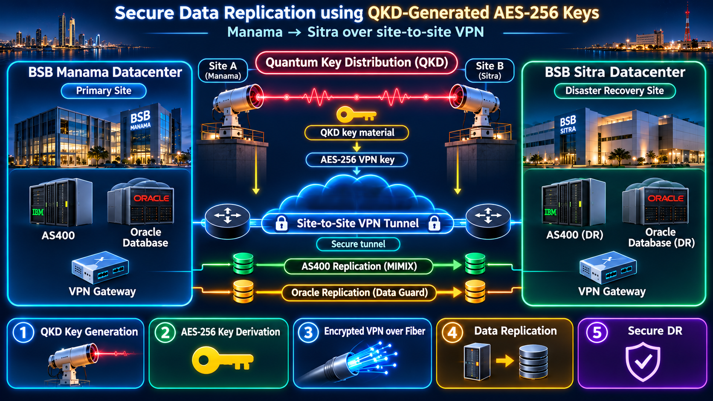
Figure 2. Example application concept: using QKD-generated material to support secure keying for site-to-site protected data replication.
| Category | Typical items |
|---|---|
| Microcontrollers & electronics | 2× ESP32 development boards, ADS1115 ADC, 2× OPT101, 2× micro servos, 4×4 keypad, jumper wires, breadboard/perfboard, 5 V power supply |
| Optics | 650 nm laser diode module, linear polarizer film, HWP / retarder film, PBS cube, optional 50/50 non-polarizing beam splitter for Eve mode, 50% sun film attenuator |
| Mechanical build | Clear acrylic sheets, small brackets, mounts, hot glue, fasteners, beam-stop and alignment aids |

Reference image. Example ESP32-S3 display board style used in the project.
Three vector diagrams separate the free-space optical path from the electrical wiring. Use the detailed Alice and Bob sheets for connection planning. They have labelled GPIOs, device terminals, power requirements and common-ground notes.
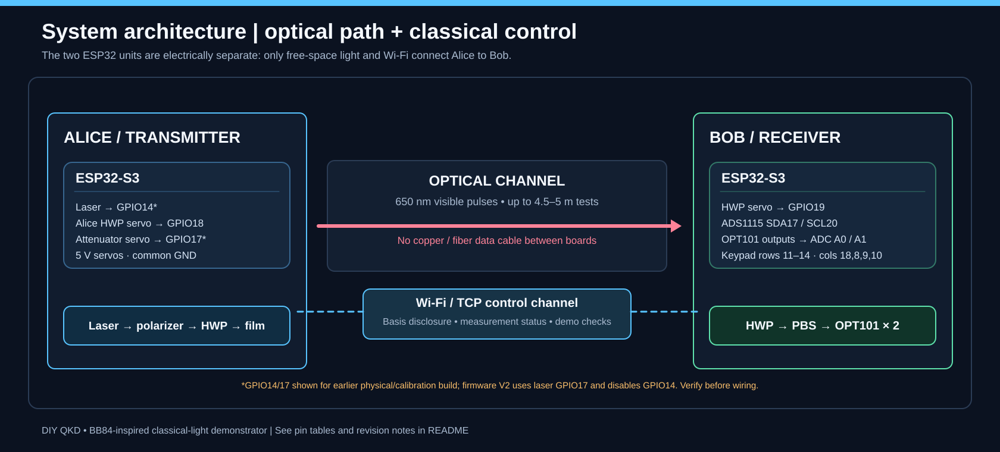
Figure 3. Optical and Wi-Fi connections between two electrically independent units. The red line is light, not an electrical wire. View PNG version ↗
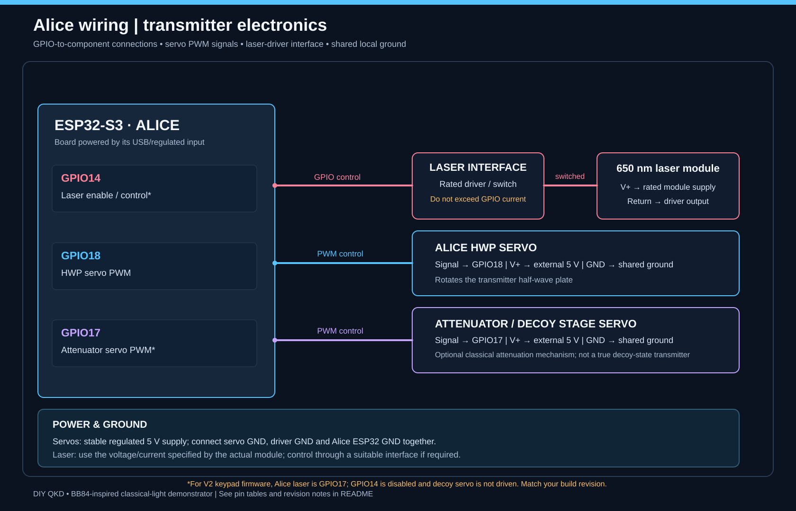
Figure 4. Alice connections with laser-driver interface and servo signal and power references. View full-size SVG ↗ · View PNG version ↗
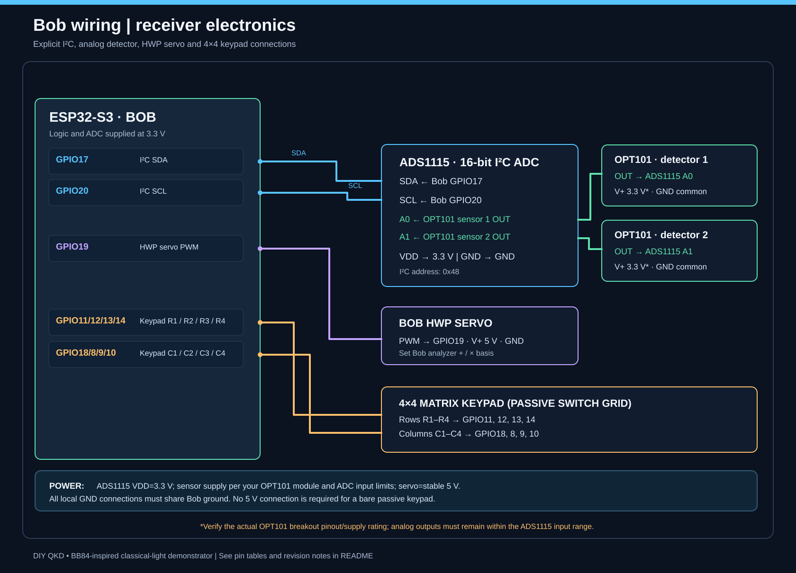
Figure 5. Bob I²C, analog sensor and keypad connections with power and ground specifications. View full-size SVG ↗ · View PNG version ↗
| Unit | Component | Signal pins | Electrical connections / purpose |
|---|---|---|---|
| Alice | Laser module | GPIO14 | GPIO to a suitable laser-control input or switching stage; module supply as rated |
| Alice | HWP servo | GPIO18 | Servo PWM signal; external 5 V and common ground |
| Alice | Attenuator servo | GPIO17 | Servo PWM signal; optional optical attenuation stage |
| Bob | HWP servo | GPIO19 | Servo PWM; external 5 V and common ground |
| Bob | ADS1115 | GPIO17 SDA / GPIO20 SCL | 3.3 V and ground; ADS1115 address 0x48 |
| Bob | OPT101 outputs | ADS1115 A0 / A1 | One photodiode channel per PBS output; sensor ground shared with ADC |
| Bob | Keypad rows | 11, 12, 13, 14 | Passive 4×4 matrix keypad R1–R4 |
| Bob | Keypad columns | 18, 8, 9, 10 | Passive 4×4 matrix keypad C1–C4 |
Firmware revision matters: The earlier calibration/video hardware uses Alice
GPIO14for the laser andGPIO17for the attenuator servo. The separately documented V2 keypad firmware usesGPIO17for the laser and leavesGPIO14untouched (no decoy motor). Do not mix the pin maps. CheckLASER_PINand servo pin definitions in the firmware actually installed before applying power.
Safety: Do not drive a laser module or servos above ESP32 GPIO current limits. Use a stable servo power supply, common ground within each unit, a suitable laser driver/switch and an effective beam stop. Bob's GPIO20 is used for I²C SCL in this revision; use the appropriate UART debug port rather than conflicting native USB signals.
The code on both ESP32 boards is split into two roles.
Automatic session logic (simplified)
1. Alice chooses random basis + bit.
2. Alice moves HWP and waits ready.
3. Bob chooses a random basis and moves his HWP.
4. Bob samples ambient light.
5. Alice emits a short laser pulse.
6. Bob reads A0 and A1 through ADS1115.
7. Bob subtracts ambient baseline and classifies the result.
8. Alice and Bob reveal bases, keep only matched-basis slots.
9. Bob estimates QBER from the kept bits.
10. Public checks / fingerprints confirm both sides derived the same sifted sequence.Before the final demonstration, Alice and Bob's half-wave-plate (HWP) servo angles were calibrated using dual OPT101 sensors and the ADS1115 ADC. The analysis below comes from the recorded 9–10 November 2026 voltage logs and the earlier BB84 Optical Voltage Analysis report, rather than idealized theoretical curves.

Figure 6 — actual measured 5° × 5° calibration heatmap. Horizontal axis: Bob servo angle (0°–180°); vertical axis: Alice servo angle (0°–180°). Red indicates stronger net A0 output, blue stronger net A1, and pale zones approximately balanced detector contributions. White markers show early candidate angle pairs; final +1 was refined to 29° after this coarse scan.
| Recorded calibration measure | Result | Meaning |
|---|---|---|
| Total voltage observations | 3,587 CSV rows across 10 files | Combined calibration/validation dataset |
| Completed HWP angle grid | 1,369 / 1,369 at 5° steps | 37 Alice positions × 37 Bob positions |
| Early fine scan | 1,653 / 32,761 positions | Initial 1° raster was intentionally stopped, not a completed grid |
| Final free-space validation | 24 readings at 4.5 m | 12 matched-basis dominant results and 12 wrong-basis MIXED |
| ADC clipping flags | 0 across saved rows | No recorded clipped measurements in these logs |
| Alice state | Alice HWP | Bob matching basis | Bob HWP | Expected dominant detector |
|---|---|---|---|---|
| + bit 0 | 120° | + | 50° | A0 |
| + bit 1 | 29° | + | 50° | A1 |
| × bit 0 | 165° | × | 105° | A0 |
| × bit 1 | 65° | × | 105° | A1 |
Why 29° instead of 25°? In repeated trials the original Alice +1 angle (25°) gave a wrong-basis contrast of about 20.75%, outside the diagnostic MIXED region (<15%). After 1° refinement, 29° reduced the repeated wrong-basis contrast to about 6.96% while retaining 96.27% contrast in the correct basis.
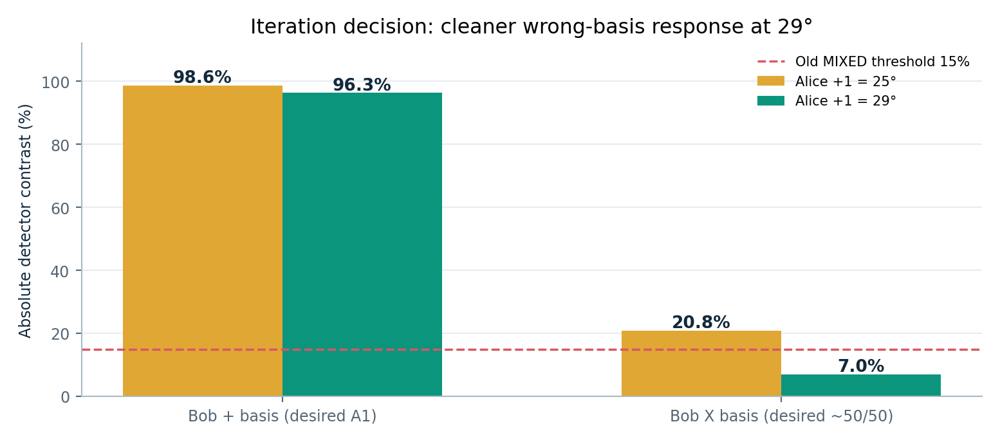
Figure 7. How the 29° adjustment improved wrong-basis balance.
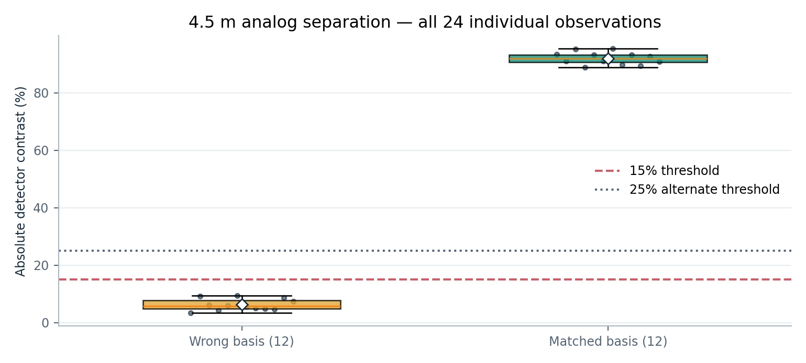
Figure 8. Final 4.5 m checks: 12 matched-basis and 12 wrong-basis observations.
Each detector channel is read with the laser off and on. The software subtracts the ambient baseline from each optical voltage before comparing their relative strengths:
D0 = max(0, A0_ON - A0_DARK)
D1 = max(0, A1_ON - A1_DARK)
S = D0 + D1
contrast = 100 * abs(D0 - D1) / S (when S > 0)
A0_share = 100 * D0 / S
A1_share = 100 * D1 / SInterpretation: High contrast on a matched basis means one output of Bob's PBS dominates; low contrast for a mismatched basis means the classical optical intensity splits approximately equally. The historical report used a <15% MIXED diagnostic threshold, while some later firmware revisions offer an independently adjustable optical threshold. These are analog classification criteria, not quantum-mechanical single-photon outcomes or proof of quantum secrecy.
Research interpretation: The 24-point 4.5 m test supports successful optical/analog separation for this educational apparatus. It does not demonstrate a low quantum bit error rate, single-photon security, or a production-ready QKD key rate. For the full evidence, refer to the original November 2026 voltage analysis report.
| Project / website | Explore |
|---|---|
| MeetICT & BITEX 2026 — Quantum Security 101 | 🔐 GitHub · limnesh/bitex |
| DPS-QKD over Free-Space Optical Channels — Project Report | 📖 Read the research report |
| QKD over Free-Space Optical Communication — Project Report | 📖 Read the project report |
| 3D Couple — Art that changes perspective | 🎨 Visit 3dcouple.com |
| ATCSpeak — Aviation communication practice | ✈️ Visit ATCSpeak |
Limnesh Augustine is an Electronics and Communication Engineer (BTech) and Project Manager at Gulf Business Machines (GBM), Bahrain, with over two decades of IT experience. He previously served as Head of IT for the Works Directorate and subsequently the Planning & Future Systems Directorate at the Ministry of Interior, Bahrain, until 2019.
Beyond technology, he is an internationally recognized 3D anamorphic artist, a multiple Guinness World Record holder (Bahrain and USA), recipient of Italy’s Madonnari title, and an EASA-licensed Private Pilot(Airplane). His creative work includes collaborations with FAO, UNDP, WHO and WWF and participation in UN-related initiatives. Explore his art at 3DCouple.com and his aviation learning project at ATCSpeak.
His interests span Quantum computing, Quantum communication, QKD, free-space optics and AI. He has completed postgraduate studies in Quantum Communications at IIT Delhi, presented a 2025 IEEE paper on AI-based art evaluation, and won the 2019 Hacking (CTF) competition organized by CID, Ministry of Interior, Bahrain